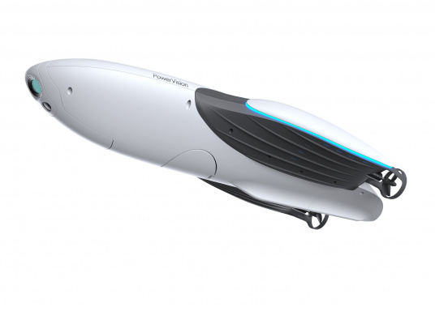

Ec💧n💧me
Écologique
L'eau, enjeu vital du XXI siecle

Économique
Une nouvelle urbanisation
Espace urbain saturé et reconquis par les mobilités douces
Nous passerons par des réseaux souterrains
et si on passait par les égouts ?Des réseaux d'eau non potable
- Des villes ont déjà des réseaux d'eau non potable
- Le besoin est présent
Michelin ?
Nous sommes un fabriquant d'enveloppes !
Notre expertise des polymères réussira à créer l'enveloppe parfaite pour nos colisDes drones sub-aquatiques/tout terrain pour livrer
Nous avons les compétences en robotique et iot
Toutes les grandes métropoles
Ayant des problématiques d'eau3mds d'urbains en 2020
5mds d'urbains en 2030
Tous les réseaux de distribution
Sous la pression sociéatale et environnementale70%
des cyberacheteurs privilégient les sites ayant une démarche éco responsableNous serons un acteur de la livraison de colis
- 10mds d'objects adressés en France
- 16mds d'€ de CA
Nous Michelin fournirons des enveloppes
Peut-être aussi le moyen de livrer au travers des réseaux souterrainsDéveloppons un réseau d'eau non potable mutualisé avec la livraison de colis
- Définir les possibilités
- S'associer
- Public
- Privé
- Se positionner
- Expérimenter